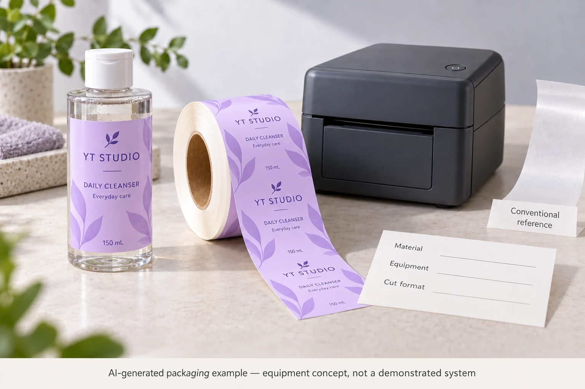
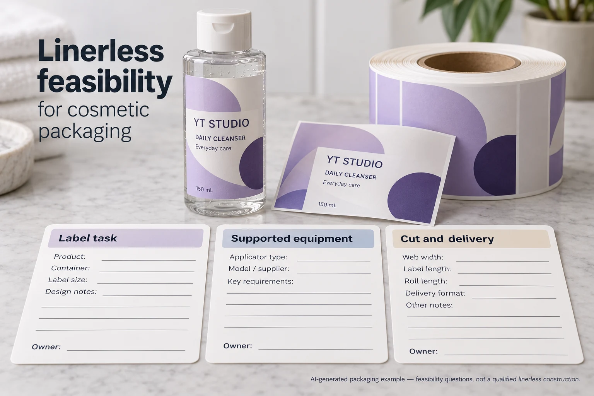

A cosmetic packing site sees a linerless label proposal and likes the idea of less spent backing. Before replacing its current roll, the buyer needs to identify which label task the proposal actually serves and whether the site's equipment is designed for that material path.
Treat linerless as a different supplied system. Confirm the printer or applicator, surface release treatment, cutting arrangement and finished-label requirements together. Removing a backing sheet from a drawing does not turn a conventional adhesive roll into a qualified linerless product.

Name the label job before comparing rolls
A brand label applied to a lotion bottle, an internal work-in-process label and a short-lived shipping label have different appearance and information lifecycles. Identify which task is being changed. A direct-thermal linerless product described for logistics or retail is not automatically a replacement for a decorated bottle label that stays with the consumer pack.
Obtain the actual required dimensions, variable content, print appearance, target surface and expected handling. Ask the site how the current labels are printed and applied. The equipment path matters as much as the count of labels on a roll.
UPM's linerless overview describes self-adhesive material without a release liner, using a release coating on the label surface. Its direct-thermal examples serve identified logistics, retail and food contexts. That explains the technology family, not a universal availability or performance promise for cosmetic branding.
Ask which equipment supports the exposed adhesive path
Avery Dennison's linerless overview states that its linerless labels are used with printers designed with release surfaces along the paper path. Ask the equipment owner and material supplier to identify the exact supported pairing. A roll fitting on the holder does not establish compatibility with the rollers, print path or cutting system.
Confirm whether labels are cut to length, perforated or supplied through another supported arrangement. Identify who owns cut-length setup, maintenance and the response to adhesive build-up or a feeding event. The material supplier's comments about its own clean-cutting technology should not be transferred to another unnamed adhesive and machine.
Have the authorised operator establish the procedure. Do not improvise release coatings, solvent cleaning, blade modifications or access to moving parts from a procurement article. If the existing machine lacks a supported linerless path, ask for a compatible route or keep the conventional format while the equipment decision is assessed.
Keep surface release separate from bottle adhesion
The top release treatment helps the wound roll separate during use. The adhesive underneath must still meet the intended receiving-surface task. Those two functions should be identified in the proposal rather than collapsed into a claim that linerless sticks better.
Ask what the print method and top treatment mean for the required image and later operations. If a variable mark is added after the original printing, identify the receiving surface. If the final label is placed on a consumer bottle, assess its relevant appearance and use conditions separately from a successful feed through the machine.
The liner release versus bottle adhesion guide explains the broader interface distinction for conventional constructions. A linerless system changes the release arrangement; it does not erase the need to identify which interface each observation describes.
Build a feasibility record before seeking a replacement price
| Input | What to obtain | Decision supported |
|---|---|---|
| Label task | Brand, internal operation or logistics; content and lifecycle | Whether this product family addresses the actual need |
| Material | Exact face, adhesive, release treatment and print method | Whether the proposed system is identified |
| Equipment | Printer/applicator model and supplier-supported material pairing | Whether the path is designed for linerless use |
| Cutting/delivery | Format, cut method, dimensions and relevant setup reference | Whether the output can meet the actual label requirement |
| Receiving surface | Bottle, carton or other target and condition | Whether adhesion and presentation need a separate review |
| Trial | Representative roll, operator procedure, observations and acceptance owner | Whether the complete arrangement has been evaluated |
| Commercial scope | Material, equipment, maintenance and trial responsibilities | Whether alternatives are quoted on a comparable basis |

Complete task and material identity first. Have the equipment owner confirm compatibility before ordering a trial roll. Agree a representative trial and its acceptance scope with the operator and relevant technical parties. Record any difference between the trial material and the proposed supply.
If the feed succeeds but the output shape, print or application remains unresolved, keep those questions open. If a trial needs new equipment or a different maintenance arrangement, include that scope in the comparison. Do not report material savings as total project savings while leaving an unpriced operational change outside the calculation.
Stop the replacement release if no party can confirm the equipment/material combination, the required cut format is unsupported or the consumer-label lifecycle has been inferred from a short-lived logistics example.
Compare two legitimate routes
A hypothetical site needs a short-lived carton identification label and already owns an acknowledged linerless printer. It can investigate an appropriate material and trial without changing the bottle's decorative label. A second site has a conventional bottle-label applicator and a premium multi-colour brand label. That project needs a much broader feasibility discussion before treating a linerless brochure as a substitute roll.
Keeping backed labels can be reasonable when the existing process and required construction are established. If spent liner is the main concern, the liner-collection guide covers a separate waste-handling task. A collection arrangement does not qualify linerless equipment, and adopting linerless does not itself establish an environmental claim for the finished cosmetic pack.
For cosmetic label procurement, send the exact label task, receiving surface, equipment model, output size, quantities and required print. Ask which currently supported options and representative samples can be reviewed. This article does not claim that YT supplies a specific linerless system or printer.
Use the inquiry form to prepare your message. Send equipment and material references separately by email or WhatsApp; the form does not upload attachments. Settle the supported operating route before comparing a conventional roll and a linerless roll solely on unit price.
Sources: UPM linerless material overview and Avery Dennison linerless solution. The manufacturer-specific descriptions support the system questions; their certification, savings or performance statements are not attributed to this hypothetical cosmetic project.